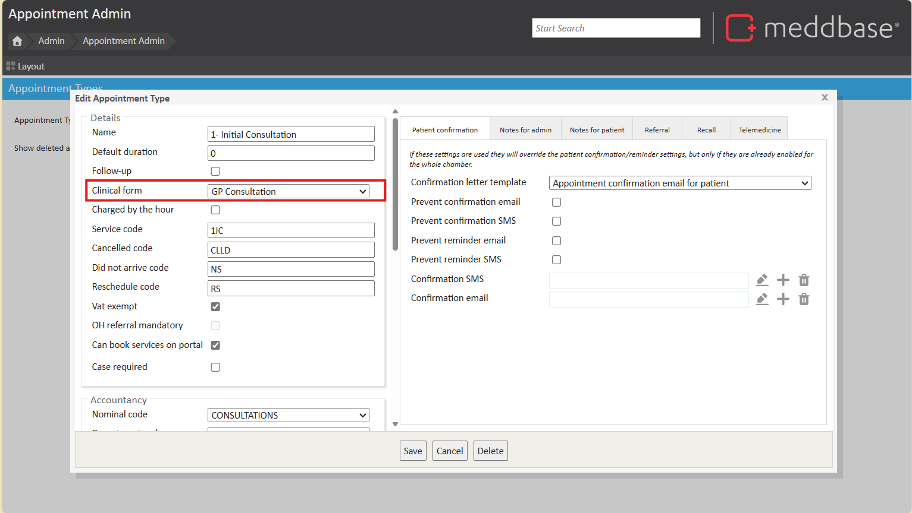
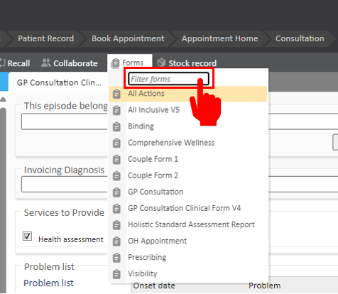
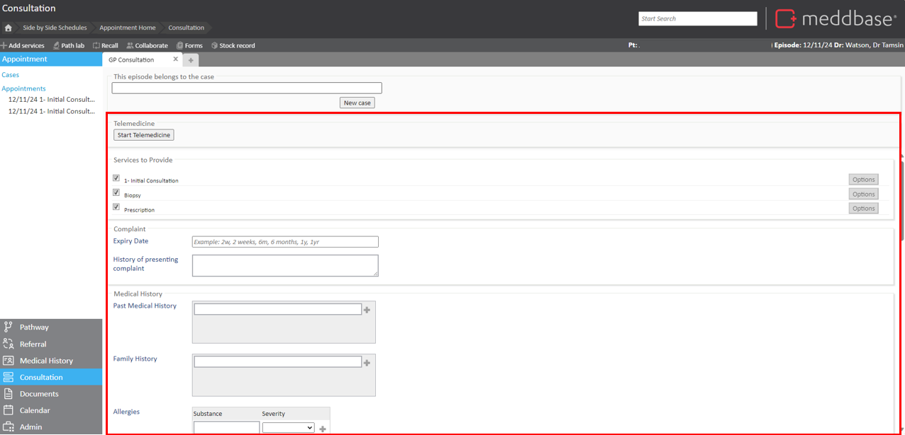
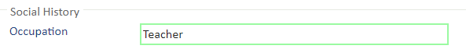
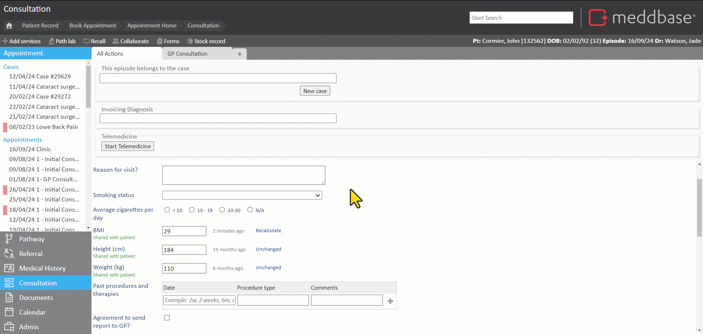
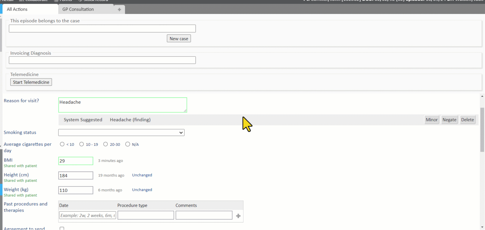
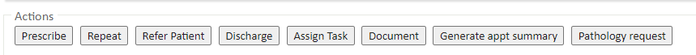

Meddbase Clinical Forms is a powerful tool within our comprehensive clinical management software. Designed to streamline consultations and improve the accuracy and completeness of patient records, clinical forms allow for easy note taking, history keeping, and action planning. With customisable form templates, pre-populated fields, and automated data capture, Meddbase Clinical Forms enable you to focus on what you do best: providing the highest quality care to your patients.
What is the purpose of this article?
This article explains how to access, complete, and manage clinical forms in Meddbase, including options for adding forms, entering data, and performing actions like creating prescriptions or setting follow-up tasks.
It is important to note, clinical forms can be customised and therefore the labelling of questions and type of field may differ, however the process of completing a clinical form remains the same.
Accessing Clinical Forms
Clinical forms are accessible only within a consultation and are used to document findings or actions taken during the session.
When defining the appointment types in a chamber, forms can be pre-configured to appear automatically for certain appointment types, ensuring that the same form is presented each time a specific appointment type is marked as "arrived.". This is set up in Admin > Appointment Admin.

If additional forms are needed during a consultation, they can be added by clicking the Forms icon at the top of the clinical form. This opens a list of available templates, which can be filtered using the search function.

Structure of a Clinical Form
A clinical form consists of various field types, each labeled to indicate the required data. There are 3 mains types: textual input fields, selection-based fields and structured data fields.
Note Boxes: For extensive notes or descriptions.
Text Boxes: For short form notes.
Patient Data Fields: Auto-fills from existing patient data.
Drop-Down Lists: For selecting pre-defined options.
Radio Buttons: For single-choice selections.
Date Fields: To specify dates.
Historic Logs: To add notes that track changes over time.
Tables: For structured records made up of other fields.

How to Complete a Clinical Form
Entering data into a clinical form is straightforward, with different methods depending on the type of field you are filling out.
Free Text Fields: For free text fields, you can either type directly into the field or use voice dictation software for hands-free input.
Typing or Dictation: When entering data, you can type directly into the field or use dictation software, such as Dragon, to dictate into free text fields. This is especially useful for hands-free note-taking.
Predictive Text: If enabled, predictive text will suggest words or phrases as you type, speeding up data entry. SNOMED CT predictive text can also help by suggesting medical terms, ensuring consistency and accuracy. SNOMED CT is also used in Clinical Decision Support when Prescribing. For more information on SNOMED CT, please refer to our article on Working with SNOMED CT terms in Meddbase.
Selection Fields: For fields like dropdown lists, radio buttons, or checkboxes, you will need to select one of the predefined options.
How Data is Saved
Clinical forms in Meddbase save data automatically or require user action depending on the field type:
Autosave: Free text fields/Numerical data field entries - When typing/dictating into a Free Text (notes) field or a Numerical Data, e.g. BMI, field on a Clinical Form in Meddbase, the outline of the field will turn GREEN when you click outside of the field or into a subsequent field. This indicates the entry was saved*.

*Free text fields support dictation such as Dragon or Diction Browser plugins. Once you have dictated into a field, click elsewhere on the page to save this.

User action required: Tables, Dropdown List, Checkboxes, Radio Buttons, Notes with History field types require action to save entry - when interacting with these field types, an Action is required to save an entry, i.e.:
Tables and Notes with History - require clicking the button.
Dropdown Menus - require clicking a down arrow and a selection from a list of answers/options.
Checkboxes - require a tick in a box .
Radio Buttons - require a tick in a circle .

Error Indication: If an entry is incorrect (e.g., entering letters instead of numbers), or there has been an error in saving the data, the field outline will turn red, indicating the data hasn't been saved.
Where Data is Saved
Once entered, all information from the clinical form is automatically stored in the patient’s medical history. If the field is linked to a specific category (e.g., allergies or medications), it will be tagged and placed in the corresponding section of the patient’s record for easy access.
Action Buttons and Follow-Up Options
Once information is recorded in the clinical form, various action buttons may be available at the bottom, enabling the clinician to take immediate steps based on the consultation. Possible actions include:
Creating a prescription or repeat prescription
Referring the patient internally or externally (if networks are set up)
Discharging the patient
Setting a follow-up task, either for the clinician or another team member
Creating documents, either from templates or as new documents
Generating specific templated documents through custom action buttons

To learn more about action buttons available on a clinical form, please see our article on Clinical Form Action Buttons
Requesting a New Clinical Form
If your practice does not currently have a specific clinical form and needs one created, you can now build your own following the How to use the Clinical Form Builder article.
 and a selection from a list of answers/options.
and a selection from a list of answers/options.